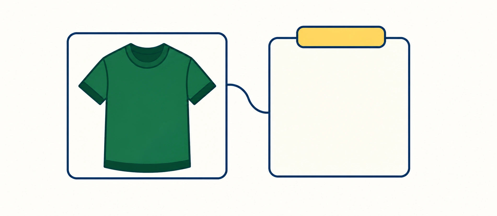
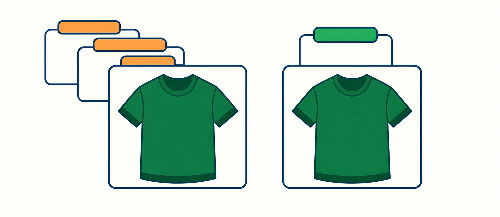
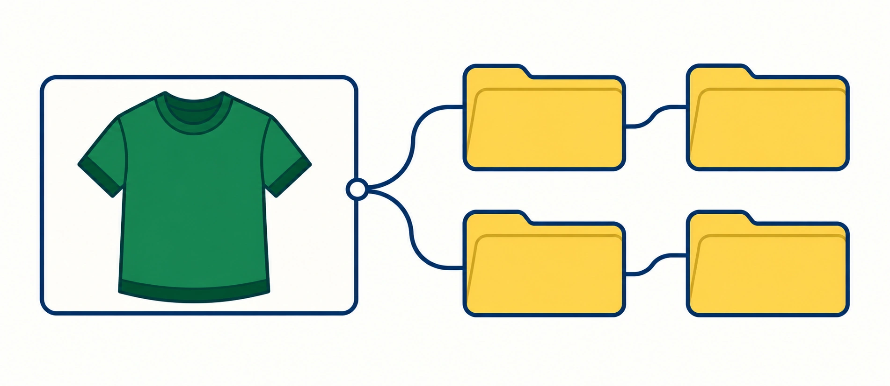
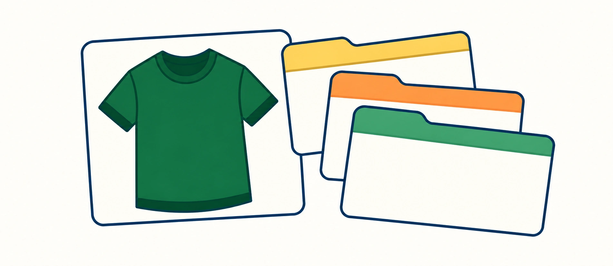
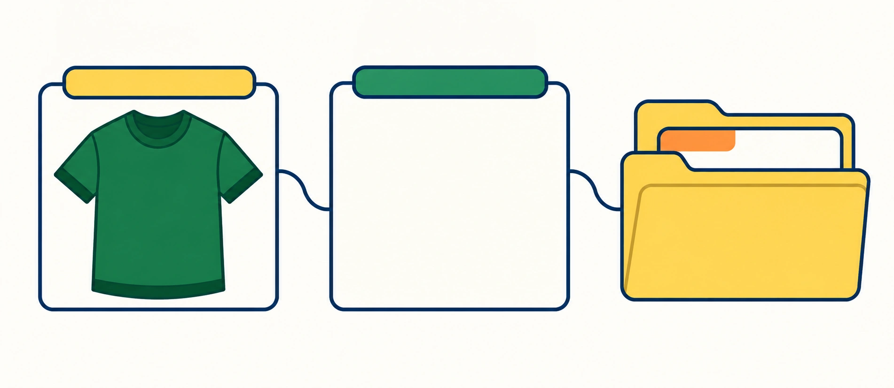

Tags, collections, and product types can all help organize a Shopify catalog. The confusion starts when one of them is forced to do all three jobs.
The easiest way to separate them is to ask three different questions: What is this product? What attributes or internal labels belong to it? Where should shoppers browse it?
1. Product type answers: “What is this?”
A product type is a custom classification for the product. A Shopify product can have only one product type, which makes it useful as a broad, stable label for what the item actually is.

One product. One product type. Keep the product’s identity stable; use other fields for its attributes and shopping paths.
What is it?
T-shirt — one broad, stable classification.
What else applies?
For the illustrative Riley Oversized Cotton Tee: tags include green, cotton, and oversized; collections include T-shirts and Green Edit.
Think of product type as part of the product's identity, not a list of every characteristic it has.
“T-shirt” works as a type. “Green,” “cotton,” “summer,” and “staff favorite” are doing different jobs.
2. Tags answer: “What labels are useful for this product?”
Tags are flexible keywords attached to products. They can help with admin organization, search, collection logic, and in some storefront setups, filtering.
A product can have multiple tags, which makes tags useful for attributes and internal labels that cut across different product types.

A useful tag has one meaning. Use the same name for the same attribute.
Three names for one color
green; forest-green; green_tee
Collection rules and filters may treat these as different labels.
One reusable label
green — one consistent label for this meaning.
Use other tags for different traits. In the article’s illustrative product record, these include cotton, oversized, and graphic.
The important part is consistency. If one person uses forest-green, another uses dark green, and another uses green_tee, the catalog slowly turns into tag soup.
Tags themselves are not a shortcut to better search-engine rankings. Their value is primarily in organization and the customer experiences you build from that organization.
3. Collections answer: “Where should shoppers browse this?”
A collection groups products into a customer-facing or merchandising context. That group might be based on category, theme, season, use case, color, sale status, or another shopping intent.

One product. Multiple shopping paths. Collections give shoppers useful places to browse the same item.
Category: T-shirts
Shop by product category.
Newness: New Arrivals
Find the latest additions.
Lifestyle: Weekend Basics
Browse everyday outfits.
Color edit: Green Edit
Shop a color story.
A collection should answer a shopper need.
A single product can belong to multiple collections because shoppers may reasonably discover it through more than one path.
4. One product can use all three without duplication
Product: Riley Oversized Cotton Tee
Product type: T-shirt
Tags: green, cotton, oversized, graphic
Collections: T-shirts, New Arrivals, Weekend Basics, Green Edit
Notice what is happening: the product type establishes identity, the tags capture reusable attributes, and the collections turn those products into browseable shopping experiences.
5. The most common catalog mistake is making one field carry everything

Three catalog traps to catch early. Problems arise when a field is asked to do another field’s job.
Too many product types
T-shirt / Green Tee / Summer Tee
What breaks: Identity changes with every campaign.
Tag soup
green / forest-green / green_tee
What breaks: Rules and filters stop agreeing.
Collections with no purpose
Every internal label becomes a page.
What breaks: Shoppers get dead-end browse paths.
Give each field a clear purpose before the catalog becomes harder to maintain.
6. Build the system from stable to flexible
When setting up a catalog, start with the information least likely to change, then layer on the more flexible merchandising pieces.

Start stable. Then get flexible. Build from product identity toward attributes and shopping experiences.
Product type: What is it?
T-shirt
Tags and fields: What applies?
Illustrative attributes: green, cotton, oversized.
Collections: Where to browse?
T-shirts; Green Edit
A seasonal collection can change without changing what the product is.
That order gives you a cleaner foundation. Seasonal campaigns and merchandising can change without forcing you to reinvent the product's basic identity.
7. Where SEO actually enters the picture
Collections can become useful search landing pages when they represent a real shopping intent and include enough context to deserve their own page.
Tags can support the organization behind those collections, but adding a pile of tags does not automatically improve search visibility. The public page, its content, its relationships, and the usefulness of the collection matter more.
Next: see how product tags can support organization without turning into tag soup →
Where penstack fits in
penstack can use existing product, vendor, collection, and structured catalog context when generating content, instead of treating every listing like a blank page.
That only works well when the catalog itself is understandable. Cleaner product organization gives both people and automation better source material.
The takeaway
Use product type for identity, tags for reusable labels, and collections for meaningful browsing experiences.
Help shoppers find and understand the right product.
Once the organization is clear, bring product descriptions, image text, tags, and collection assignments into a focused content cleanup session.